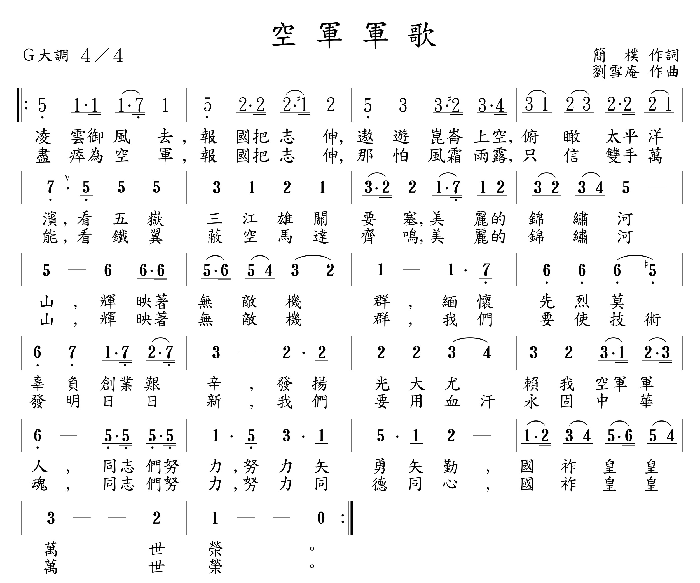

[簡譜程式輸入檔] [Lilypond 碼] [簡譜 + 歌詞 + 五線譜 (.pdf)(.png)] [midi 檔] [故事]
(軍歌版，降 G 大調)
(midi 版，C 大調)

建立日期：2015 年 9 月 28 日；最近更新日期：2015 年 9 月 29 日
[簡譜程式輸入檔]
[Lilypond 碼]
[簡譜 + 歌詞 + 五線譜
(.pdf)(.png)]
[midi 檔]
[故事]
(軍歌版，降 G 大調)
(midi 版，C 大調)
參照樂譜：

參考樂譜一：
參考樂譜二：
簡譜 + 歌詞 + 五線譜